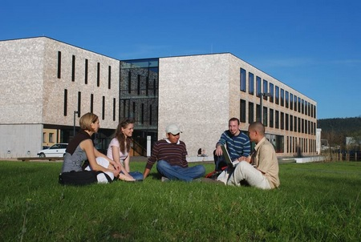

Ich bin Carolin, 21 Jahre alt und studiere an der Hochschule Furtwangen.
Ich komme aus Ewattingen, ein kleines Dorf an der Schweizer Grenze.
In meiner Freizeit spiele ich Klavier, Tennis und gehe gerne joggen.
Außerdem reise ich sehr gerne. Letztes Jahr habe ich mit einer Freundin
Südostasien erkundet. Bilder dazu findet ihr auf meiner Portfolio-Seite
Viel Spass :)
Meine Hochschule
Schaut doch mal auf YouTube vorbei.
Da gibt es 60 Studiengänge und über 6.000 Studierende.
Ich studiere Online Medien an der Fakultät Digitale Medien.
An der Fakultät Digitale Medien entstehen jedes Semester unzählige Projekte.
Die Bandbreite reicht von Konzeption, Gestaltung, Marketing, Game, Filmgestaltung,
Virtual-Reality-Projekten bis hin zu Development.
Links zu den Websiten anderer Studierenden:
Sarah Verena Nesli